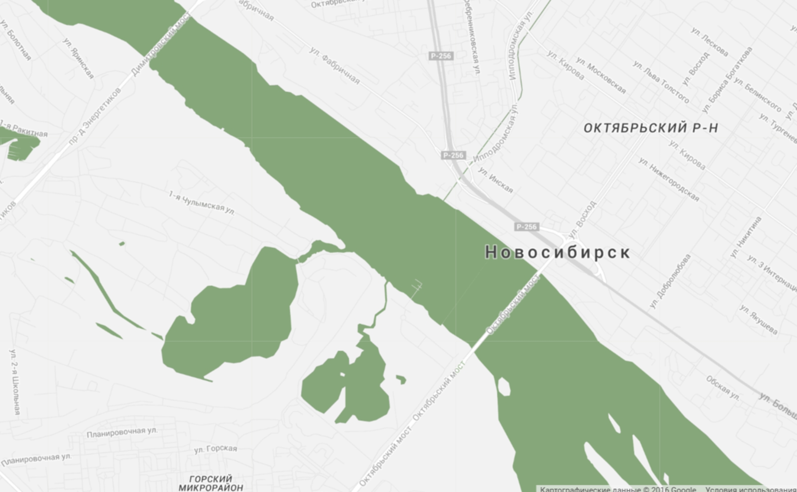

<!DOCTYPE html>
<html>
  <head>
    <meta charset="utf-8">
    <title>Home page</title>
    <meta content="" name="author">
    <meta content="" name="description">
    <meta content="" name="keywords">
    <meta content="width=device-width, initial-scale=1" name="viewport">
    <meta content="ie=edge" http-equiv="x-ua-compatible">
    <link rel="stylesheet" href="/assets/css/foundation.css">
    <link rel="stylesheet" href="/assets/css/app.css">
    <script src="/assets/js/foundation.js" defer></script>
    <script src="/assets/js/app.js" defer></script><!--[if lt IE 9]>
    <script src="http://cdnjs.cloudflare.com/ajax/libs/html5shiv/3.7.2/html5shiv.min.js"></script><![endif]-->
  </head>
</html>
<body>
  <header class="main-header">
    <div class="main-header--top row row--sp-b">
      <nav class="social-list"><a class="social-list--item" href="https://github.com/lokky2082" title="github link">
          <svg class="u-fit" xmlns="http://www.w3.org/2000/svg" xmlns:xlink="http://www.w3.org/1999/xlink">
            <use xlink:href="assets/img/svgsprite.svg#github" x="0" y="0"></use>
          </svg></a><a class="social-list--item" href="https://vk.com/id121067661" title="vk link">
          <svg class="u-fit" xmlns="http://www.w3.org/2000/svg" xmlns:xlink="http://www.w3.org/1999/xlink">
            <use xlink:href="assets/img/svgsprite.svg#vk" x="0" y="0"></use>
          </svg></a><a class="social-list--item" href="" title="linkedin">
          <svg class="u-fit" xmlns="http://www.w3.org/2000/svg" xmlns:xlink="http://www.w3.org/1999/xlink">
            <use xlink:href="assets/img/svgsprite.svg#in" x="0" y="0"></use>
          </svg></a>
      </nav><a class="humburger" href="#mainMenu" title="открыть меню">
        <svg class="u-fit" xmlns="http://www.w3.org/2000/svg" xmlns:xlink="http://www.w3.org/1999/xlink">
          <use xlink:href="assets/img/svgsprite.svg#hamburger" x="0" y="0"></use>
        </svg></a>
      <nav class="main-nav" id="mainMenu"><a class="main-nav--close" href="#" title="закрыть меню">
          <svg class="u-fit" xmlns="http://www.w3.org/2000/svg" xmlns:xlink="http://www.w3.org/1999/xlink">
            <use xlink:href="assets/img/svgsprite.svg#cancel" x="0" y="0"></use>
          </svg></a><a class="main-nav--item main-nav--item__current" href="/"><span class="main-nav--item_title">обо мне</span></a><a class="main-nav--item" href="/works.html"><span class="main-nav--item_title">мои работы</span></a><a class="main-nav--item" href="/blog.html"><span class="main-nav--item_title">блог</span></a><a class="main-nav--item" href="/auth.html"><span class="main-nav--item_title">авторизация</span></a>
      </nav>
    </div>
    <div class="main-header--content">
      <div class="intro">
        <div class="intro--img"></div>
        <div class="intro--text">
          <h3 class="intro--text-title">Юлия Зайцева</h3>
          <h4 class="intro--text-sub-title">Личный сайт веб разработчика</h4>
        </div>
      </div><a class="arr-down" href="#about">
        <svg class="u-fit" xmlns="http://www.w3.org/2000/svg" xmlns:xlink="http://www.w3.org/1999/xlink">
          <use xlink:href="assets/img/svgsprite.svg#arrow_down" x="0" y="0"></use>
        </svg></a>
    </div>
    <div class="main-header--bot">
      <svg preserveAspectRatio="none" viewBox="0 0 1000 100">
        <polygon points="0,0 0,100 1000,100" fill="#ebefe2"></polygon>
      </svg>
      <svg preserveAspectRatio="none" viewBox="0 0 1000 100">
        <polygon points="0,100 1000,100 1000,0" fill="#f4f5f0"></polygon>
      </svg>
    </div>
  </header>
  <main class="u-main-wr">
    <section class="about" id="about">
      <article class="about--intro">
        <h1 class="t-deco t-bot-line t-h1"><span class="t-deco--text">обо мне</span><span class="t-deco--img">
            <svg class="u-fit" xmlns="http://www.w3.org/2000/svg" xmlns:xlink="http://www.w3.org/1999/xlink">
              <use xlink:href="assets/img/svgsprite.svg#about_header" x="0" y="0"></use>
            </svg></span></h1>
        <div class="about--intro-text">
          <h2 class="t-bot-line t-h2">кто я</h2>
          <p>Я веб разработчик из Екатеринбург. Занимаюсь разработкой современных сайтов и приложений. Мне нравится делать интересные и современные проекты.</p>
          <p>Этот сайт я сделала в рамках обучения в Школе онлайн образования LoftSchool. Чуть позже я освежу в нём свой контент. А пока не смотрие на текст и бородатого мужика!</p>
        </div>
      </article>
      <article class="about--infograf">
        <h2 class="t-bot-line t-h2 u-centered-text"><span class="t-deco--text">Что я умею</span></h2>
        <p>Больше всего меня привлекет Frontend разработка, но я также знаком и могу решать не сложные задачи на Backend. Но давайте по порядку.</p>
        <ul class="infograf-lists">
          <li class="infograf-lists--item">
            <h3 class="t-h3 infograf-lists--item-title">Frontend</h3>
            <ul class="infograf-lists--item-items">
              <li class="infograf-lists--items">
                <div class="info-circle" data-percent="98">
                  <svg class="info-circle--img u-fit" viewBox="0 0 120 120">
                    <circle fill="none" stroke-width="15" stroke="#dfdcd5" cx="60" cy="60" r="45"></circle>
                    <circle fill="none" stroke-width="15" stroke="#6c9c5a" cx="60" cy="60" r="45" stroke-dasharray="282.7433388230814" stroke-dashoffset="5.654866776461628"></circle>
                  </svg>
                  <div class="info-circle--text">HTML5</div>
                </div>
              </li>
              <li class="infograf-lists--items">
                <div class="info-circle" data-percent="80">
                  <svg class="info-circle--img u-fit" viewBox="0 0 120 120">
                    <circle fill="none" stroke-width="15" stroke="#dfdcd5" cx="60" cy="60" r="45"></circle>
                    <circle fill="none" stroke-width="15" stroke="#6c9c5a" cx="60" cy="60" r="45" stroke-dasharray="282.7433388230814" stroke-dashoffset="56.54866776461628"></circle>
                  </svg>
                  <div class="info-circle--text">CSS</div>
                </div>
              </li>
              <li class="infograf-lists--items">
                <div class="info-circle" data-percent="50">
                  <svg class="info-circle--img u-fit" viewBox="0 0 120 120">
                    <circle fill="none" stroke-width="15" stroke="#dfdcd5" cx="60" cy="60" r="45"></circle>
                    <circle fill="none" stroke-width="15" stroke="#6c9c5a" cx="60" cy="60" r="45" stroke-dasharray="282.7433388230814" stroke-dashoffset="141.3716694115407"></circle>
                  </svg>
                  <div class="info-circle--text">JS</div>
                </div>
              </li>
            </ul>
          </li>
          <li class="infograf-lists--item">
            <h3 class="t-h3 infograf-lists--item-title">Backtend</h3>
            <ul class="infograf-lists--item-items">
              <li class="infograf-lists--items">
                <div class="info-circle" data-percent="98">
                  <svg class="info-circle--img u-fit" viewBox="0 0 120 120">
                    <circle fill="none" stroke-width="15" stroke="#dfdcd5" cx="60" cy="60" r="45"></circle>
                    <circle fill="none" stroke-width="15" stroke="#6c9c5a" cx="60" cy="60" r="45" stroke-dasharray="282.7433388230814" stroke-dashoffset="5.654866776461628"></circle>
                  </svg>
                  <div class="info-circle--text">PHP</div>
                </div>
              </li>
              <li class="infograf-lists--items">
                <div class="info-circle" data-percent="80">
                  <svg class="info-circle--img u-fit" viewBox="0 0 120 120">
                    <circle fill="none" stroke-width="15" stroke="#dfdcd5" cx="60" cy="60" r="45"></circle>
                    <circle fill="none" stroke-width="15" stroke="#6c9c5a" cx="60" cy="60" r="45" stroke-dasharray="282.7433388230814" stroke-dashoffset="56.54866776461628"></circle>
                  </svg>
                  <div class="info-circle--text">MySQL</div>
                </div>
              </li>
              <li class="infograf-lists--items">
                <div class="info-circle" data-percent="50">
                  <svg class="info-circle--img u-fit" viewBox="0 0 120 120">
                    <circle fill="none" stroke-width="15" stroke="#dfdcd5" cx="60" cy="60" r="45"></circle>
                    <circle fill="none" stroke-width="15" stroke="#6c9c5a" cx="60" cy="60" r="45" stroke-dasharray="282.7433388230814" stroke-dashoffset="141.3716694115407"></circle>
                  </svg>
                  <div class="info-circle--text">Node.js</div>
                </div>
              </li>
            </ul>
          </li>
        </ul>
      </article>
    </section>
    <section class="location" id="location"></section>
  </main>
  <footer class="main-footer">
    <div class="main-footer--top"></div>
    <div class="main-footer--bottom"></div>
  </footer>
</body>